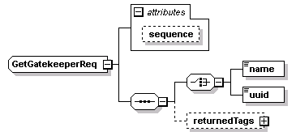
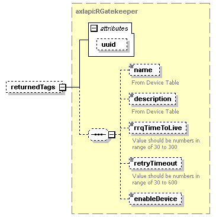

| diagram |  | ||||||||||||
| namespace | http://www.cisco.com/AXL/API/10.5 | ||||||||||||
| children | name uuid returnedTags | ||||||||||||
| used by |
|
||||||||||||
| attributes |
|
||||||||||||
| source | <xsd:complexType name="GetGatekeeperReq"> <xsd:sequence> <xsd:choice> <xsd:element name="name" type="axlapi:String100"/> <xsd:element name="uuid" type="axlapi:XUUID"/> </xsd:choice> <xsd:element name="returnedTags" type="axlapi:RGatekeeper" minOccurs="0"/> </xsd:sequence> <xsd:attribute name="sequence" type="xsd:unsignedLong" use="optional"/> </xsd:complexType> |
attribute GetGatekeeperReq/@sequence
| type | xsd:unsignedLong | ||
| properties |
|
||
| source | <xsd:attribute name="sequence" type="xsd:unsignedLong" use="optional"/> |
element GetGatekeeperReq/name
| diagram | |||||||
| type | axlapi:String100 | ||||||
| properties |
|
||||||
| facets |
|
||||||
| source | <xsd:element name="name" type="axlapi:String100"/> |
element GetGatekeeperReq/uuid
| diagram |  |
||||||
| type | axlapi:XUUID | ||||||
| properties |
|
||||||
| facets |
|
||||||
| source | <xsd:element name="uuid" type="axlapi:XUUID"/> |
element GetGatekeeperReq/returnedTags
| diagram |  | ||||||||||||
| type | axlapi:RGatekeeper | ||||||||||||
| properties |
|
||||||||||||
| children | name description rrqTimeToLive retryTimeout enableDevice | ||||||||||||
| attributes |
|
||||||||||||
| source | <xsd:element name="returnedTags" type="axlapi:RGatekeeper" minOccurs="0"/> |
XML Schema documentation generated by XMLSpy Schema Editor http://www.altova.com/xmlspy